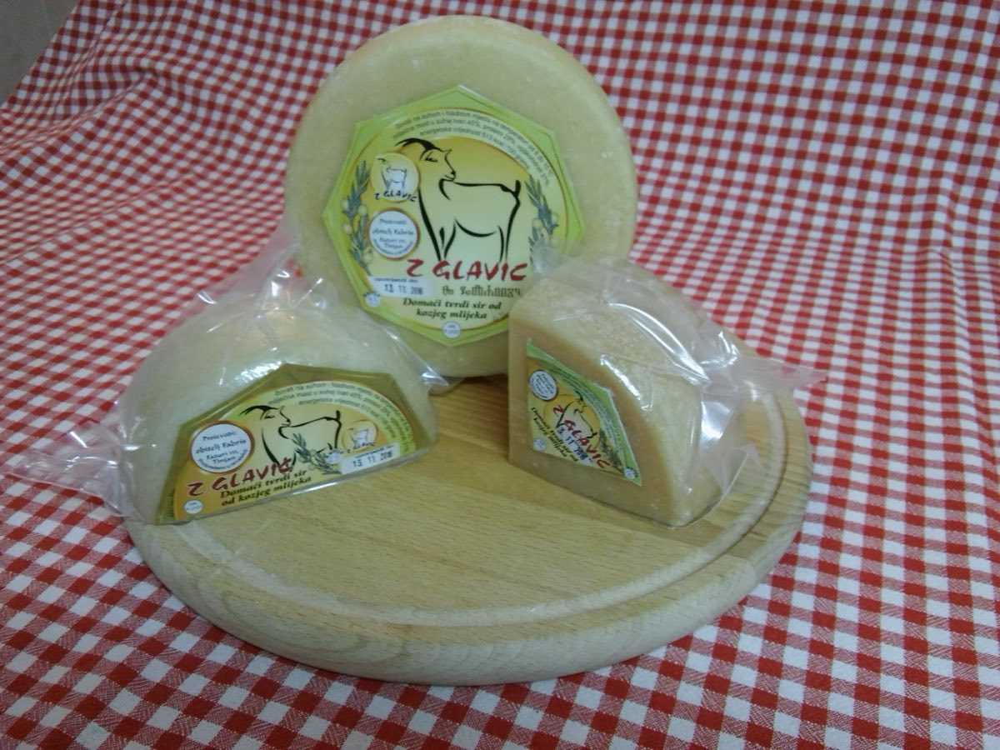
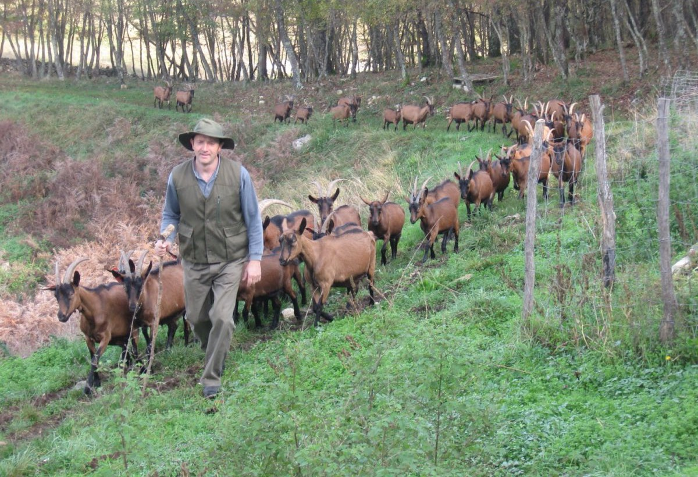
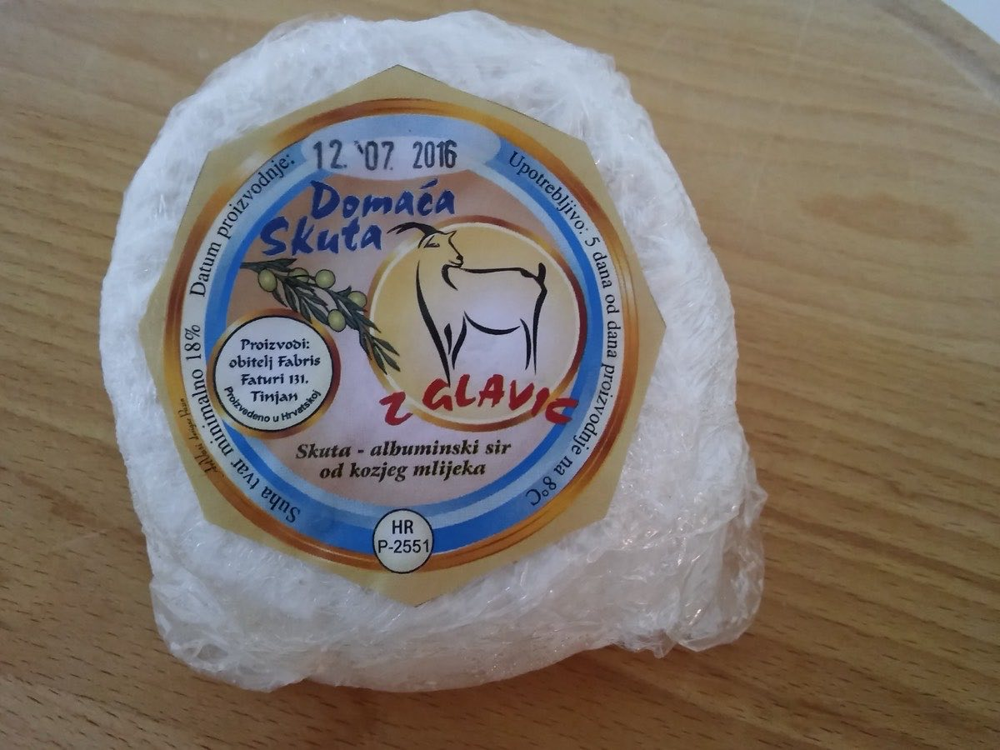
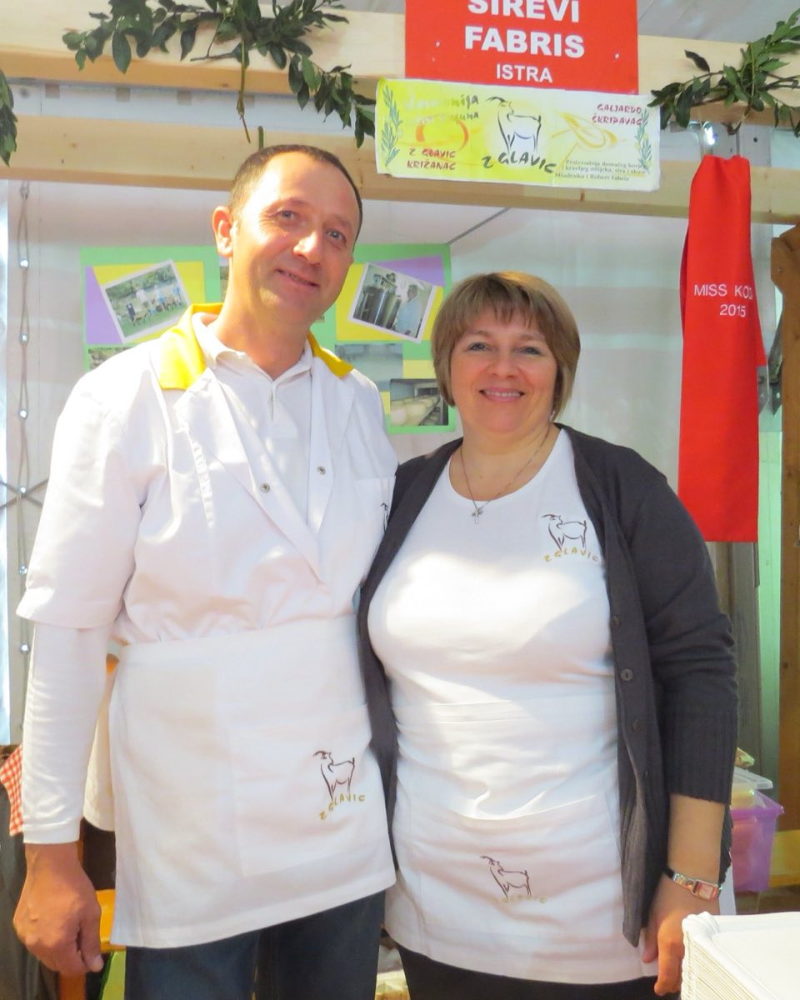
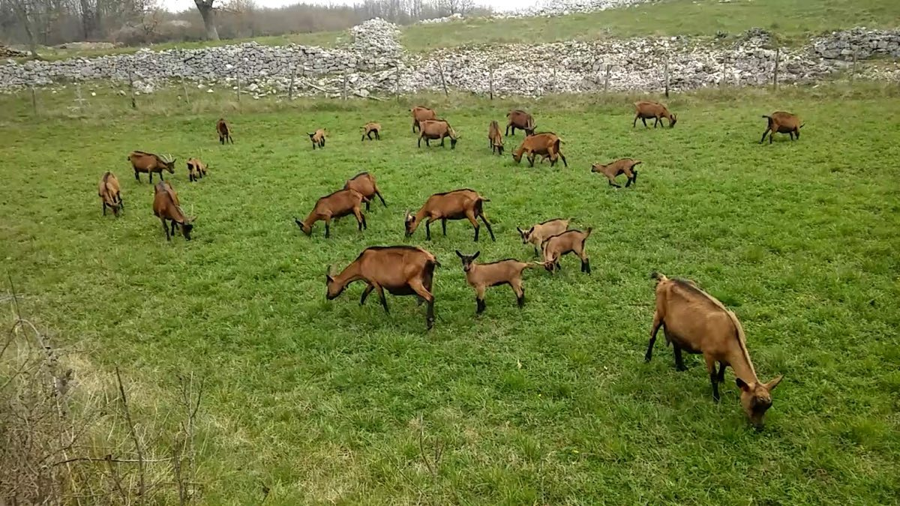
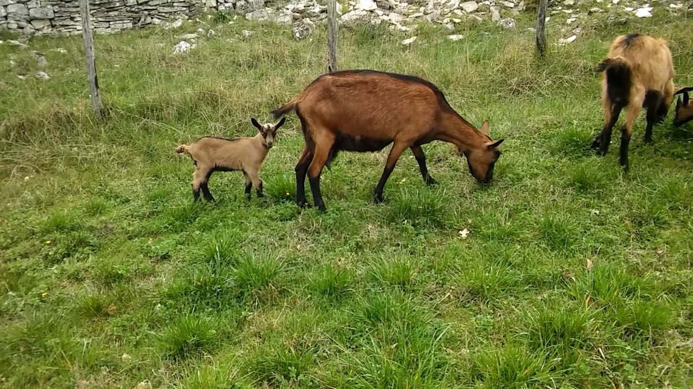
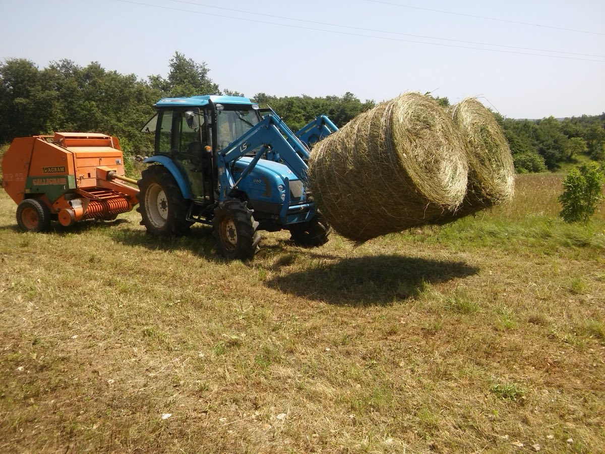
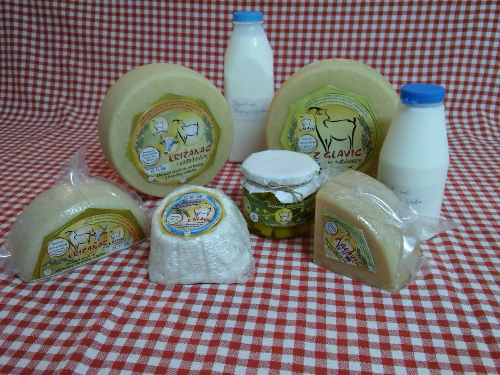
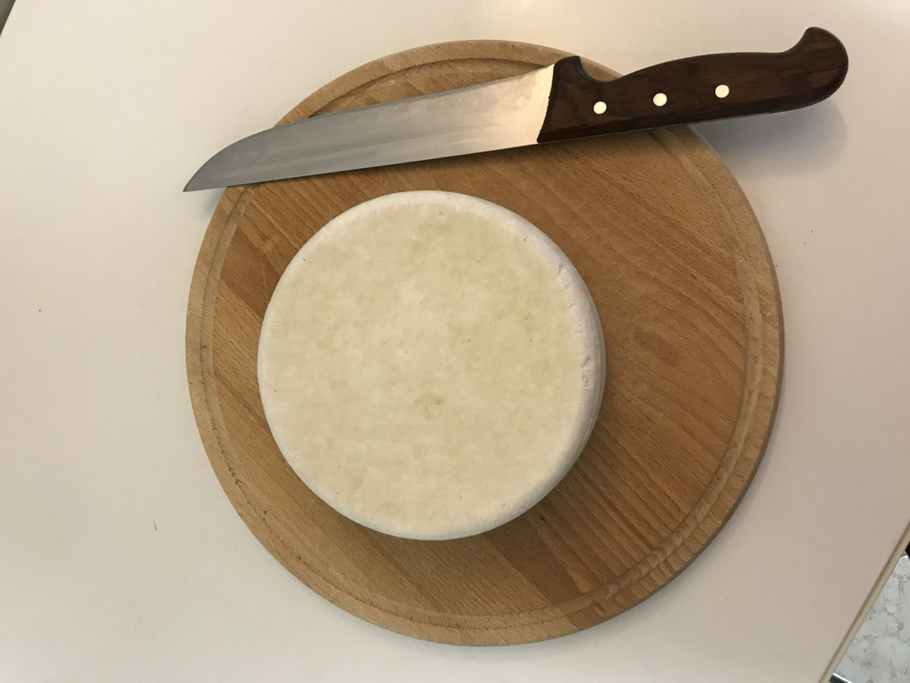

Tvrdi kozji sir
Sir z Glavic
Tvrdi sir od kozjeg mlijeka s naše farme, veliki brend našeg gospodarstva.

Uzgajamo koze na vlastitoj farmi i od njihova mlijeka radimo sir, skutu, mlijeko i jogurt. Životinje su na slobodnoj ispaši, a sijeno za njih sami sijemo, kosimo i spremamo. To je posao u kojem radi cijela obitelj.
U proizvodnji nam nije važna količina nego kvaliteta, a to je prepoznala i struka: naši su proizvodi višestruko nagrađivani. Najveći brend gospodarstva je tvrdi kozji sir „z Glavic”.

Tvrdi sir od kozjeg mlijeka s naše farme, veliki brend našeg gospodarstva.

Domaći tvrdi sir od kozjeg i kravljeg mlijeka. Ime mu je na deklaraciji ispisano i glagoljicom.

Mekani albuminski sir od kozjeg mlijeka, bogat vitaminima. Na deklaraciji: upotrebljivo 5 dana od dana proizvodnje, na 8 °C.

Naša se obitelj oduvijek bavi stočarstvom. Koze smo najprije držali zbog vlastite obitelji, za svježe domaće mlijeko i mliječne proizvode. Kako je obitelj brojna, proizvodilo se sve više, a s viškom su stigli i prvi kupci.
„Kako nam u proizvodnji nije važna kvantiteta nego kvaliteta, to je prepoznala i struka.”
Stočarstvo je osnovna grana našeg gospodarstva u selu Faturi, nad samom Limskom dragom.
Koze su najprije bile tu za potrebe obitelji. Višak proizvoda doveo je prve kupce.
Obiteljsku mini siranu „z Glavic” registrirali smo 2007. godine.
Tradicionalno smo izlagači na Internacionalnom sajmu pršuta u Tinjanu.
Stočarstvo ostaje bazna grana, a zbog interesa mlađih na gospodarstvu stižu povrtlarstvo i pčelarstvo.
U vrijeme laktacije koze nadohranjujemo sijenom koje sami zasijavamo, kosimo i spremamo. To je mukotrpan posao u kojem radi cijela obitelj.





Recenzije prenesene s naše dosadašnje web stranice.
„Najbolji sir koji sam do sada probao. Svaka čast.”
Romeo M.
„Proizvodi za deset.”
Kristijan I.
„Best buy choice.”
Stefano S.
Na našem gospodarstvu u selu Faturi kod Kringe (Faturi 131, Tinjan). Za sve pojedinosti nazovite 091 792 7466.
Tvrdi kozji sir z Glavic, Križanac (tvrdi sir od kozjeg i kravljeg mlijeka), domaći kozji sir u maslinovom ulju, kozju skutu, kozje mlijeko i kozji jogurt.
Koze su na slobodnoj ispaši, a u vrijeme laktacije nadohranjujemo ih sijenom koje sami zasijavamo, kosimo i spremamo.
Tradicionalno smo izlagači na Internacionalnom sajmu pršuta u Tinjanu.